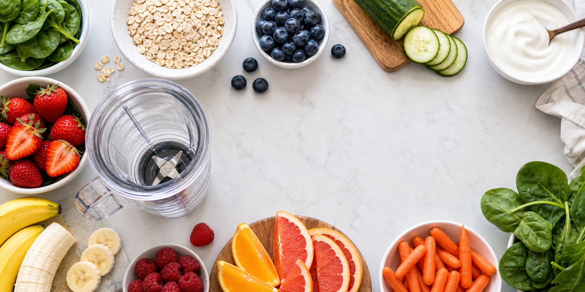

本地离线规则引擎
榨汁搭配助手
输入水果、蔬菜、酸奶、燕麦等食材，快速判断风味是否协调、质地会不会奇怪，以及是否触发常见健康注意事项。
综合判断
先输入食材
--
口感
均衡
注意
搭配评价
注意事项
推荐调整
重要说明和依据
这个工具用于日常饮品搭配参考，不替代医生、药师或营养师建议。若你正在服药、怀孕、有肾病、糖尿病、胃食管反流、肾结石史或食物过敏，请优先按专业医嘱处理。
- 葡萄柚/西柚可能影响多类药物代谢，服药人群需向医生或药师确认。
- 菠菜、羽衣甘蓝等深绿叶菜富含维生素 K，使用华法林者应保持摄入稳定并遵医嘱。
- 菠菜、甜菜、坚果等高草酸食材可能不适合部分肾结石高风险人群频繁大量饮用。
- 香蕉、牛油果、椰子水等高钾食材，慢性肾病或需限钾者应谨慎。
- 果蔬榨汁前应充分清洗；豆芽、鲜切果蔬、未巴氏杀菌果汁对免疫力较弱者风险更高。